2025年5月20日发布的JumpServer v4.10 LTS版本是JumpServer产品演进历程中一个非常重要的版本。在这一版本中， JumpServer以PAM（Privileged Account Management，即特权账号管理）为核心需求进行架构升级，在完整保留并深度优化原有账号全生命周期管理功能的基础上，突破性地引入账号风险智能检测引擎与应用权限动态管理模块。
从这一版本开始，JumpServer真正将“PAM（特权账号管理）”与“堡垒机审计”合二为一，通过PAM模块提供一整套高效的特权账号管理功能，包括自动发现、批量推送、密码备份、账号改密、风险检测以及与第三方系统的集成，在帮助企业简化账号管理流程、提升安全合规性的同时，有效降低企业实际部署与运维的成本。
一、PAM（特权账号管理）是什么?
PAM（特权账号管理)，是组织信息安全体系中至关重要的一环，主要用于管理和监控具有高权限账号的用户访问权限。简单来说，PAM就像是一个“超级管理员”，专门负责管理那些拥有高权限账号（例如Root、Administrator、免密sudo账号等）用户的登录和操作行为，确保这些高权限账号的用户访问不会被滥用。
对企业用户来说，PAM的核心价值包含以下几点：
■ 增强系统安全性
限制高危操作：PAM可以对特权用户的行为进行严格限制，比如禁止某些高风险的操作（例如删除关键数据、修改系统配置等），从而降低因误操作或者恶意操作行为导致的安全风险；
防止权限滥用：通过严格的权限分配和控制，PAM可以防止特权用户滥用权限，比如防止用户访问不属于其权限范围内的敏感数据或者核心数据。
■ 简化管理
集中管理权限：PAM可以将所有特权账号的权限集中进行管理，不需要在每个系统中单独设置权限，大大降低了管理的复杂度；
自动化操作：PAM可以自动化一些常见的特权操作，比如定期更换密码、自动备份密码等，节省了管理员的时间和精力。
二、PAM和堡垒机的关系
堡垒机，又被称为运维安全审计系统，主要提供统一运维访问入口、资产授权管控和全程审计录像等功能，帮助企业建立包含事前授权、事中监察以及事后审计在内的运维安全管理体系，满足企业运维安全合规要求。
由此可见，PAM专注于特权账号的管理，注重特权账号的安全性；而堡垒机则更侧重于对运维访问的管理，注重系统运维操作的安全性。所以，PAM和堡垒机在功能上有部分重叠，但在设计和定位上有着很多不一样的地方。具体的区别如下：
■ 管理对象不同
PAM：主要管理特权账号，这些账号通常拥有高权限，可以访问企业的核心系统和数据；
堡垒机：管理所有需要访问资产的用户和用户需要访问的资产，包括普通用户、特权用户、服务器、网络设备、数据库和B/S架构应用等，范围更广。
■ 功能重点不同
PAM：主要关注特权账号的管理，包括权限分配、密码管理、操作审计等，重点是防止特权用户滥用权限，保护企业的核心资产；
堡垒机：主要关注对远程访问的管理和审计，能够实时监控所有用户的操作过程，记录下他们的每一个动作。如果系统出现问题，可以通过这些记录快速追溯原因，帮助管理员迅速定位问题。
■ 应用场景不同
PAM：适用于对内部特权账号进行管理，特别是在企业内部有大量高权限账户需要严格管控的场景；
堡垒机：适用于需要安全运维并进行严格控制的场景，比如企业对外提供远程办公支持、外包人员访问内部系统、日常运维变更操作等场景。
所以，PAM和堡垒机是网络安全中同样重要的工具，虽然它们的侧重点和应用场景有所不同，但是在实际使用中，很多企业会同时部署PAM和堡垒机，以构建更为全面的安全防护体系。
三、JumpServer一体化PAM和堡垒机的优势
在传统方案中，很多企业为了实现更全面的安全防护，往往同时部署PAM与堡垒机，两个系统分别管理人、机、密。由于采用的是独立部署方式，PAM和堡垒机无法共享同一套用户系统和权限策略，导致出现管理分散、运维复杂、成本高昂等问题。
JumpServer v4.10 LTS版本创新性地将堡垒机与PAM功能无缝整合，形成“访问控制+特权管理”的一体化解决方案，既能发现并管理特权账号，同时也能对运维操作进行审计管控，所有操作在一套JumpServer系统内实现，真正实现了全面、立体化的安全防护。
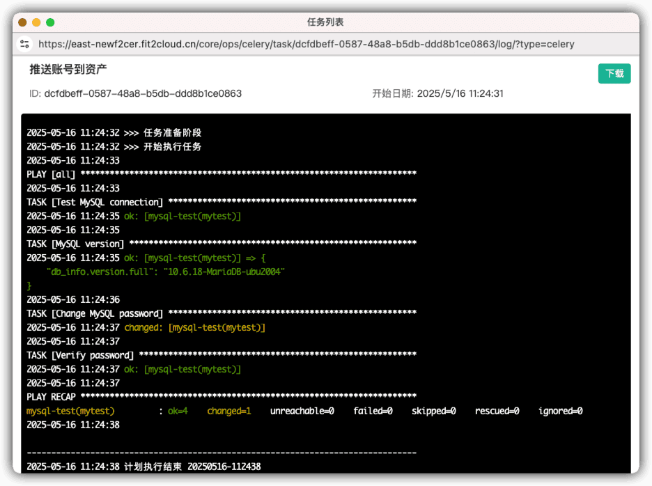
▲附表 传统方案与JumpServer“PAM+堡垒机”一体化方案对比四、JumpServer PAM核心功能详解
结合最新JumpServer v4.10 LTS版本，我们来逐一介绍JumpServer PAM的核心功能，包括账号发现、账号推送、账号备份、账号改密、风险检测和应用管理。
1. 账号发现
在企业环境中，资产数量一旦多了之后，手动管理账号几乎是不可能完成的任务。账号发现功能可以帮助管理员快速梳理资产中的所有账号情况，避免因遗漏高危账号而导致的安全隐患。
自动扫描：支持定时或周期性扫描方式，对服务器、网络设备、数据库等资产的账号进行深度发现。系统能够自动识别资产中的账号信息，包括用户名、权限级别、所属用户组等，确保所有账号都被纳入管理范围；
账号识别：按节点、指定资产快速定位未管理的高危账号。通过资产目录的可视化展示，管理员可以清晰地看到哪些资产存在未授权或高危账号，从而及时采取措施进行处理，一键删除未知账号。
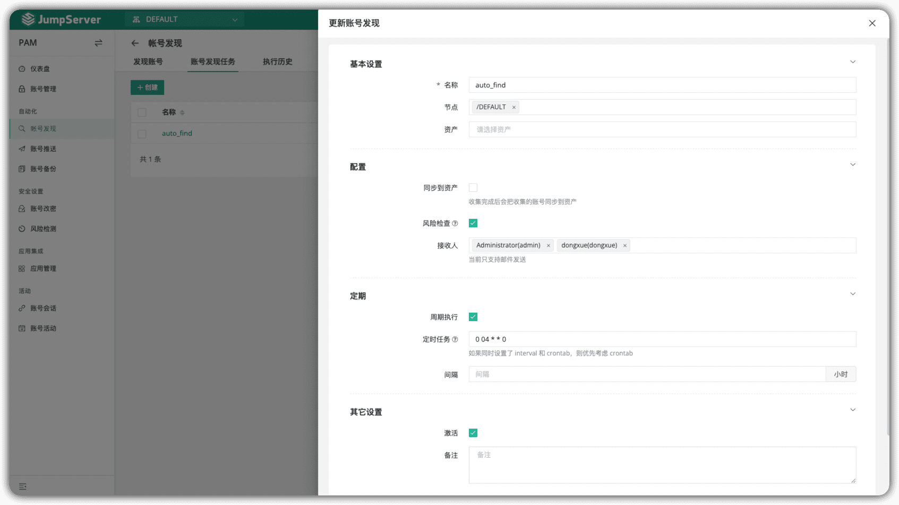
▲图1 JumpServer的账号发现功能2. 账号推送
在新资产上线或需要批量创建账号时，账号推送功能可以快速完成账号的创建和配置，避免了管理员手动创建账号的繁琐过程，同时也确保了账号的密码设置符合相关安全标准。
集中下发：将自定义设置的账号和密码一键推送至目标资产，无需手动登录资产进行创建。管理员可以在JumpServer中统一配置账号密码生成策略，并批量推送到多个资产中，大大提高了工作效率；
密码策略：支持自定义复杂密码和密文类型。系统提供多种密码策略选项，例如密码长度、字符组合等，确保生成的密码符合相关安全要求。
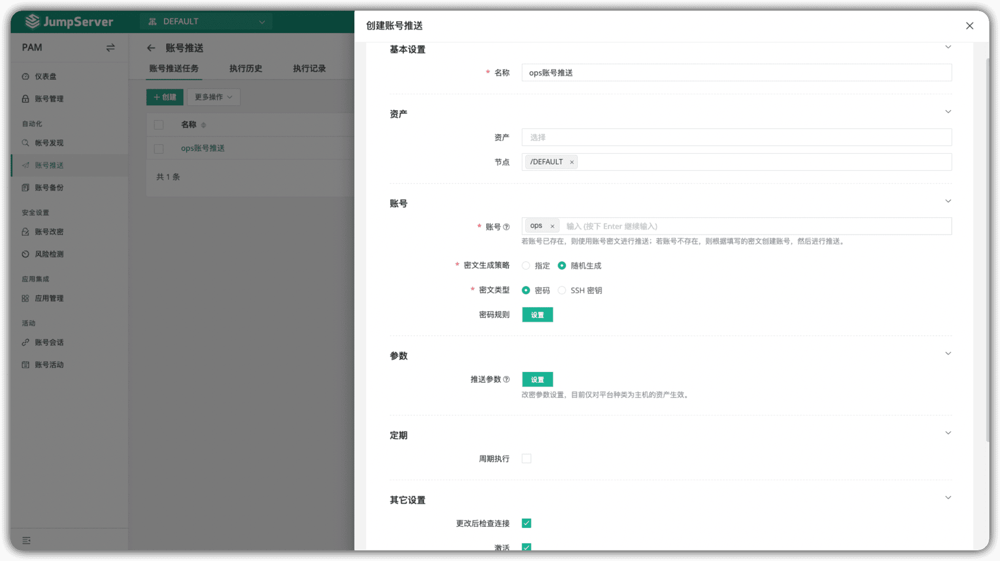
▲图2 JumpServer的账号推送功能▲图3 JumpServer自动化推送MySQL数据库账号
3. 账号备份
在企业中，无论特权账号还是普通账号的密码都是非常重要的资产，一旦丢失可能会导致严重的后果。账号备份功能可以确保在意外情况下快速恢复账号密码，同时提供双人密钥机制，满足企业的安全合规要求。
密码备份：安全备份所有账号的最新口令至指定的邮箱或者服务器。备份文件采用加密存储，确保数据的安全性，且管理员可以设定备份的周期与时间点，保证每次操作后的密码能够被安全保存；
双人密钥：提供双人解密机制，确保操作合规。只有经过双人密码组合后，才能解密备份文件，防止单人操作带来的风险。
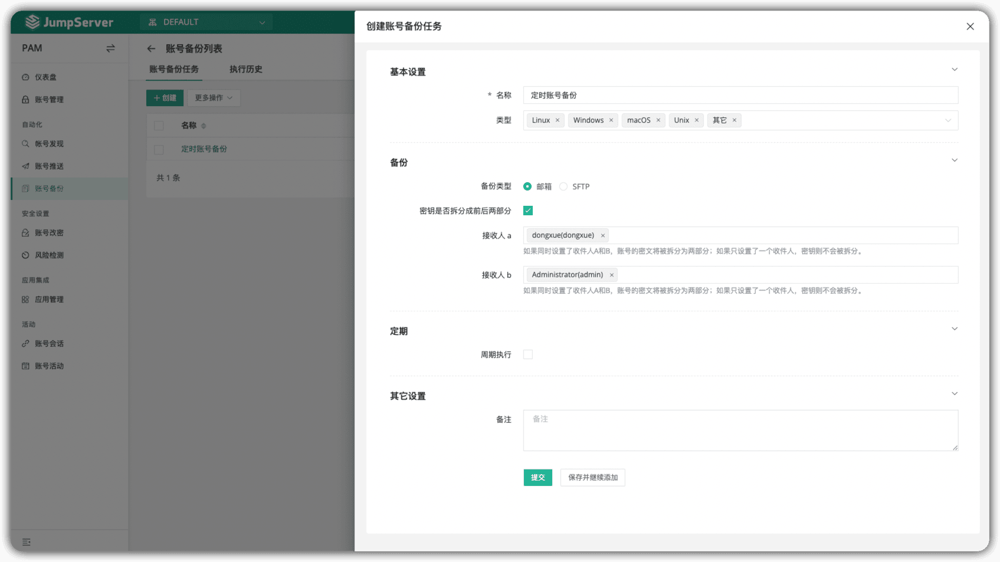
▲图4 在JumpServer中创建账号备份任务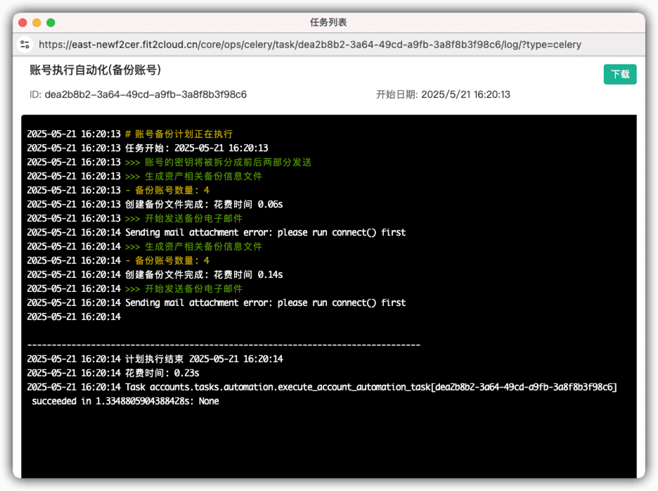
▲图5 JumpServer的备份执行记录4. 账号改密
定期更换账号密码是企业安全管理的基本要求，但手动改密不仅效率低下，还容易出错。账号改密功能可以自动化完成密码的更新操作，同时确保密码的复杂性和安全性。
一键改密：支持对指定账号、指定资产和节点进行批量改密。管理员可以通过简单的操作完成账号密码的批量修改，并且每次改密操作都会被记录下来，方便后续审计；
密码规则：密码长度、特殊字符均可在规则中统一进行配置。系统提供灵活的密码规则设置，确保生成的密码符合企业的安全策略。
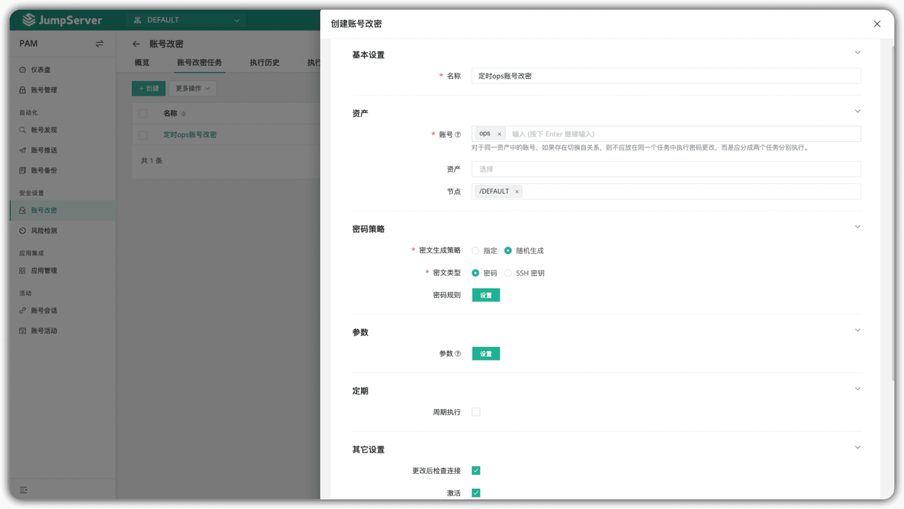
▲图6 在JumpServer中创建账号改密任务5. 风险检测
风险检测功能主要用于识别、评估和响应与特权账户、会话及操作相关的安全风险，主动发现系统的潜在风险，降低内部和外部安全威胁。
实时告警：自动扫描发现僵死账号、异常账号、弱密码账号等异常账号，及时发现潜在的安全风险，提示管理员进行进一步的安全审查；
检测引擎：内置多个不同类型的检测引擎，定时或者周期性扫描账号风险。
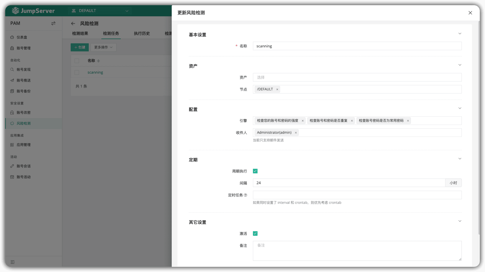
▲图7 在JumpServer中创建风险检测任务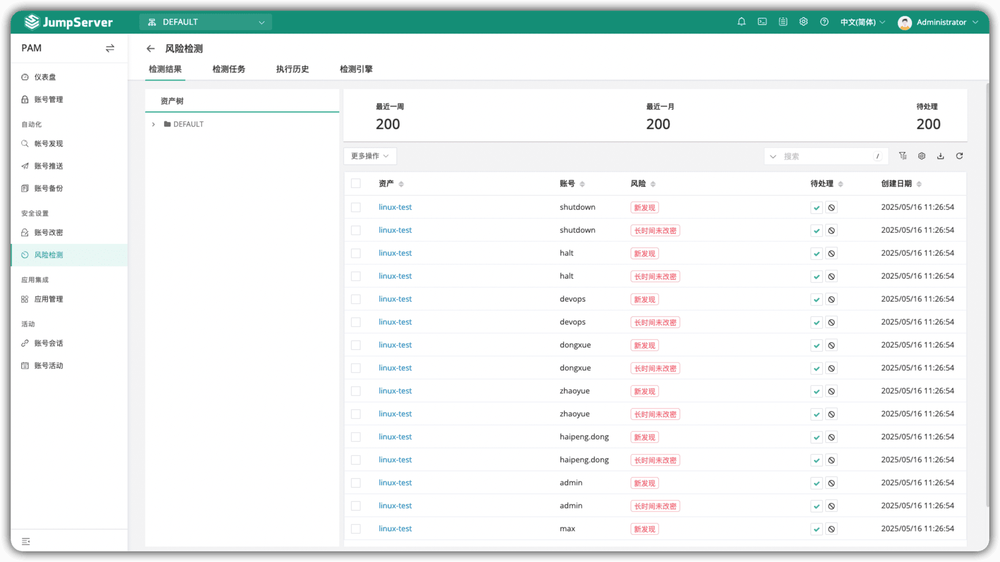
▲图8 JumpServer风险扫描结果6. 应用管理
第三方系统集成：面向第三方系统（例如CI/CD、监控、运维平台等）提供调用账号和口令API，杜绝长期有效口令泄露风险。通过API接口，第三方系统可以按需安全地获取账号信息，无需长期存储明文密码，降低了密码泄露的风险；
多语言支持与示例代码：为了方便开发者和运维人员集成，JumpServer提供了多种语言的集成示例代码，支持Python、Go、Java等主流编程语言。这些示例代码能够帮助开发者快速实现对JumpServer API的调用，进一步简化了集成过程。
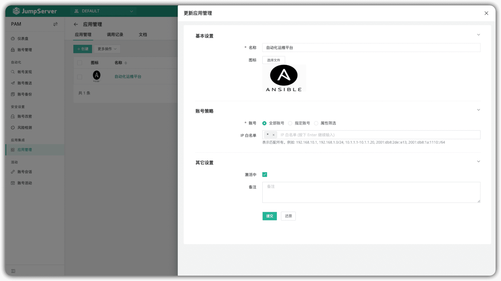
▲图9 在JumpServer中创建第三方应用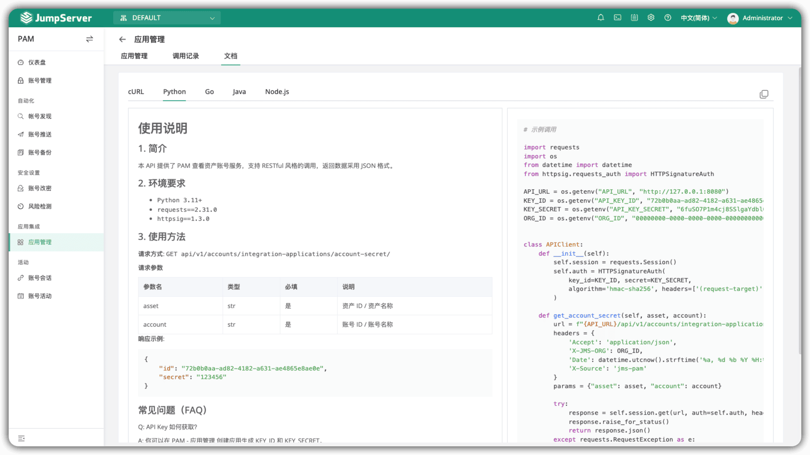
▲图10 JumpServer第三方调用说明文档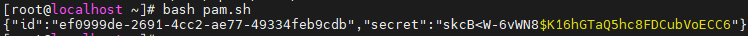
▲图11 JumpServer调用Demo展示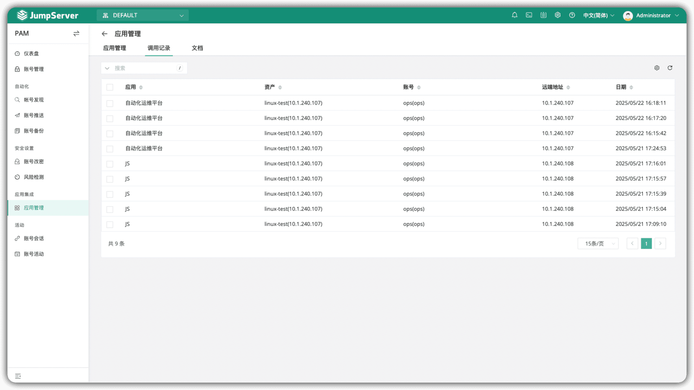
▲图12 JumpServer应用调用记录